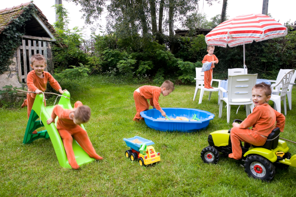

Procédures élémentaires de retouches d'images avec GIMP
- Duplication de l'image// Faire une copie dans le format du logiciel .psd ou .xcf
- Vérifier la qualité de l'image et sa résolution // Taille de l'image
- Recadrer l'image// dimension et orientation// Taille de l'image
- Suppression des imperfections // poussières, rayures, pixels manquants, détails disgracieux
- Contrastes et plages de couleurs
- Suppression d'une dominante de couleur
- Réglages de la couleur et des nuances dans certaines parties de l'image pour faire, entre autres,
ressortir les tons clairs, moyens et foncés
- Renforcement de la netteté
Une photo de Venise

Camionnette

Peinture
Photomontage
